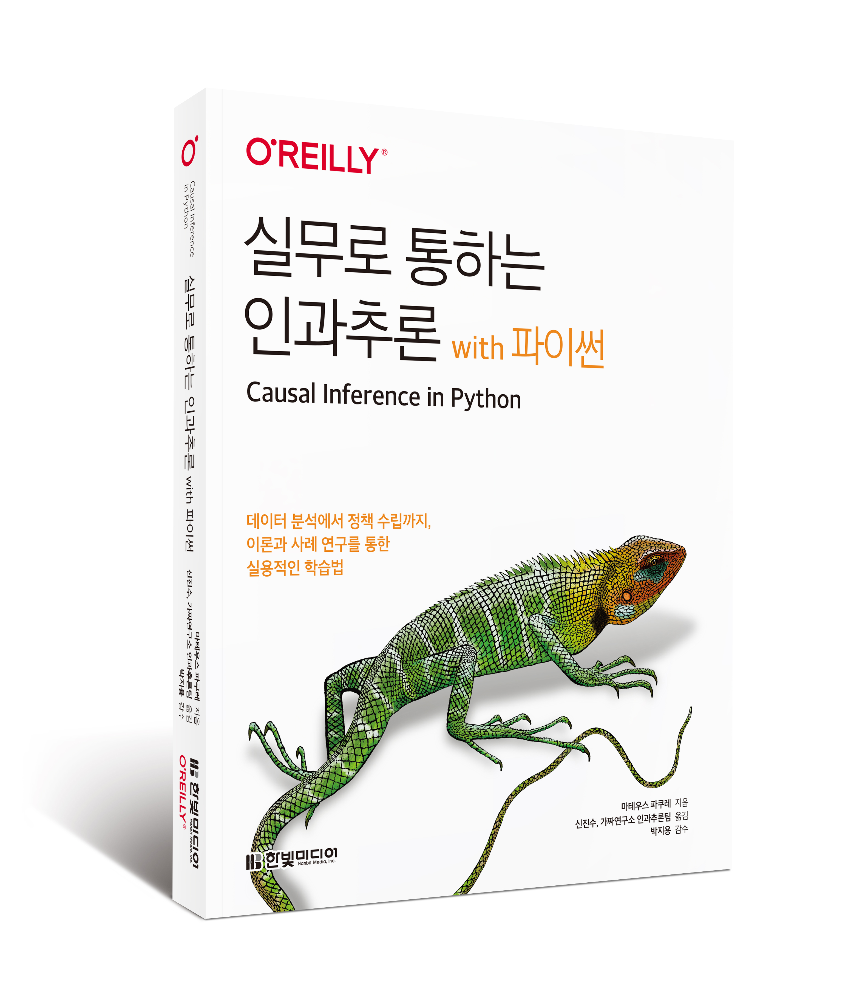

실무로 통하는 인과추론 with 파이썬
이 저장소는 한빛출판사에서 출간한 한국어판 “실무로 통하는 인과추론 with 파이썬”에서 참조하는 각종 자료 및 소스 코드와 예제 데이터를 담고 있습니다. 이 책은 다음 서점에서 절찬리에 판매중입니다(교보문고, 예스24, 알라딘, 한빛미디어)

1 책 소개
독자 여러분은 “상관관계는 인과관계가 아니다”라는 말을 많이 들어보셨죠? 이 책은 상관관계가 왜 인과관계와 다른지 그리고 데이터 과학자의 시각에서 인과추론의 기초부터 심화에 이르기까지의 내용을 다양한 실무 사례를 바탕으로 설명합니다. 나아가 인과추론 방법론에 그치지 않고 실무에서의 데이터 분석가 또는 데이터 과학자가 고민하는 수준의 실험 결과의 신뢰성 및 추론 부분까지 다루고 있습니다. 여러분이 인과추론을 처음 접하셨다면, 내용을 바탕으로 파이썬 실습 위주로 진행해볼 수 있습니다. 그리고 여러분이 데이터 분석가/과학자라면 사례를 중심으로 여러분의 도메인에 접목시켜 이론과 사례를 함께 학습할 수 있습니다.
주요 내용은 다음과 같습니다.
- 인과추론의 기본 개념과 활용법 익히기
- 인과추론과 편향의 관계 이해하기
- 인과추론으로 비즈니스 문제 해결하기
- 인과추론으로 고객을 시간에 따라 관찰하기
- 인과효과가 실험 대상마다 다를 수 있는 이유 학습하기
2 역자 소개
2.1 신진수
네오플을 거쳐 크래프톤의 데이터 분석가로 일하고 있습니다. 게임 업계에서 쌓은 커리어를 기반으로 <던전앤파이터>, <뉴스테이트 모바일>, <배틀그라운드 모바일> 등 다양한 장르의 게임에서 데이터 분석과 실험을 통해 유저 경험을 개선하는 데 기여했습니다. 비영리 데이터 사이언스 커뮤니티인 가짜연구소에서 인과추론팀을 운영 중입니다. 마테우스 파쿠레의 웹북 「Causal Inference for The Brave and True」를 한국어로 번역하는 작업을 주도했습니다 (블로그 / Github)
2.2 가짜연구소 인과추론팀
가짜연구소 인과추론팀은 2022년부터 데이터를 통한 문제해결력을 높이고자 인과추론을 함께 학습하고 있습니다. 한국어 자료가 많지 않은 인과추론을 많은 분이 쉽게 접하실 수 있도록 기여하고자 하는 마음으로, 가짜연구소에서 인과추론 이야기와 실험 및 조직문화에 대한 이야기를 이어나가고 있습니다. 이 책의 번역 작업에는 인과추론팀 김소희, 김성수, 김상돈, 김준영, 남궁민상, 박시온, 최은희, 정호재, 홍성철이 함께 참여했습니다.
3 감수자 소개
3.1 박지용
미국 조지아대학교 테리 경영대학(Terry College of Business)에서 경영정보시스템 조교수로 일하고 있다. 디지털기술의 사회적, 환경적 영향에 대한 실증연구를 해오며 인과추론 방법론을 통해 사회현상과 기업활동에서의 원인과 결과를 분석하는 일들을 수행하고 있다. 인과추론의 저변을 확대하기 위해 매년 여름
4 챕터별 자료
4.1 번역서 온보딩을 위한 강의 & 블로그
4.2 참고 도서
- Causal Inference for the Brave and True (원서 / 번역서)
- Causal Inference Stanford STATS 361 강의 노트
- Causal Inference for Statistics, Social, and Biomedical Sciences
- Causal Inference:What If
- Causal Inference:The Mixtape
4.3 책 논문 및 자료 모음
4.3.1 1장-인과추론 소개
| 챕터 | 내용 | 자료 링크 |
|---|---|---|
| 1.6 인과효과 식별하기 | 더 알아보기 | Causal Inference and Data Fusion in Econometrics |
4.3.2 2장-무작위 실험 및 기초 통계 리뷰
| 챕터 | 내용 | 자료 링크 |
|---|---|---|
| 2.2 A/B 테스트 사례 | 시뮬레이션 데이터와 실제 데이터 비교 | A Randomized Assessment of Online Learning |
| 2.4 가장 위험한 수식 | 하워드 웨이너의 유명한 글 | The Most Dangerous Equation |
| 2.5 추정값의 표준오차 | MIT의 통계학 입문 강좌 | Introduction to statistics |
| 2.6 신뢰구간 | 실제 사례: 코로나19 백신의 효과 | Efficacy and Safety of the mRNA-1273 SARS-CoV-2 Vaccine |
| 2.8 p 값 | 실제 사례: 대면 강의 vs. 온라인 강의 | Is It Live or Is It Internet? Experimental Estimates of the Effects of Online Instruction on Student Learning |
| 2.10 표본 크기 계산 | 더 알아보기 | A/B Testing Intuition Busters: Common Misunderstandings in Online Controlled Experiments |
4.3.3 3장-그래프 인과모델
| 챕터 | 내용 | 자료 링크 |
|---|---|---|
| 3.7.2 랜덤화 재해석 | 민감도 분석과 부분 식별 | Making Sense of Sensitivity: Extending Omitted Variable Bias |
| 3.8.1 충돌부를 조건부 설정 | 더 알아보기 | DAGitty, A Crash Course in Good and Bad Controls |
4.3.4 4장-유용한 선형회귀
| 챕터 | 내용 | 자료 링크 |
|---|---|---|
| 4.1 선형회귀의 필요성 | OLS 연구 | Difference-in-differences with variation in treatment timing, Interpreting Ols Estimands When Treatment Effects are Heterogeneous: Smaller Groups, Contamination Bias in Linear Regressions |
| 4.7.5 평균 제거와 고정효과 | 패널데이터를 사용한 인과추론 논문 | On the Pooling of Time Series and Cross Section Data |
| 4.9 중립 통제변수 | 잡음 제거 기법 | Improving the Sensitivity of Online Controlled Experiments by Utilizing Pre-Experiment Data |
4.3.5 5장-성향점수
| 챕터 | 내용 | 자료 링크 |
|---|---|---|
| 5.1 관리자 교육의 효과 | 민감도 분석과 부분 식별 | Estimating Treatment Effects with Causal Forests: An Application |
| 5.3.3 성향점수 매칭 | 민감도 분석과 부분 식별 | Why Propensity Scores Should Not Be Used for Matching |
| 5.3.5 역확률 가중치의 분산 | 실제 사례: 인과적 콘텍스트 밴딧 | A Contextual-Bandit Approach to Personalized News Article Recommendation |
| 5.5 이중 강건 추정 | 이중 강건 추정량 주석 | An Introduction to the Augmented Inverse Propensity Weighted Estimator |
| 5.5.2 결과 모델링이 쉬운 경우 | 더 알아보기 | Comment: Performance of Double-Robust Estimators When “Inverse Probability” Weights Are Highly Variable |
| 5.6 연속형 처치에서의 일반화 성향점수 | 연속형 처치 | Causal inference with a continuous treatment and outcome: Alternative estimators for parametric dose-response functions with applications |
4.3.6 6장-이질적 처치효과
4.3.7 7장-메타러너
| 챕터 | 내용 | 자료 링크 |
|---|---|---|
| 7.1 이산형 처치 메타러너 | 인과추론 라이브러리 | EconML 공식문서, CausalML 공식문서 |
| 7.1.1 T 러너 | 더 알아보기 | Metalearners for estimating heterogeneous treatment effects using machine learning |
| 7.2.1 S 러너 | S 러너의 편향 | Double/Debiased/Neyman Machine Learning of Treatment Effects |
| 7.2.2 이중/편향 제거 머신러닝 | 트리 기반 및 신경망 러너 | Nonparametric Estimation of Heterogeneous Treatment Effects:From Theory to Learning Algorithms, Learning Representations for Counterfactual Inference |
4.3.8 8장-이중차분법
4.3.9 9장-통제집단합성법
| 챕터 | 내용 | 자료 링크 |
|---|---|---|
| 9.4 표준 통제집단합성법 | 통제집단합성법에 대한 가정 | Using Synthetic Controls: Feasibility, Data Requirements, and Methodological Aspects |
| 9.7 추론 | 더 알아보기 | An Exact and Robust Conformal Inference Method for Counterfactual and Synthetic Controls |
| 9.8.4 통제집단합성법과 이중차분법 | 원본 합성 이중차분법 | Synthetic Difference-in-Differences |
| 9.9 요약 | 일반화 통제집단합성법 | Generalized Synthetic Control Method: Causal Inference with Interactive Fixed Effects Models, A Bayesian Alternative to Synthetic Control for Comparative Case Studies |
| 9.9 요약 | 실제 사례: causalimpact 라이브러리 | CausalImpact Github |
4.3.10 10장-스위치백 실험
| 챕터 | 내용 | 자료 링크 |
|---|---|---|
| 10.2.2 무작위 탐색 | 최적화 | Synthetic Controls for Experimental Design, Designing Experiments with Synthetic Controls |
| 10.2.2 무작위 탐색 | 다른 실험 목표 | Synthetic Design: An Optimization Approach to Experimental Design with Synthetic Controls |
| 10.3.5 강건한 분산 | 더 적은 가정으로 m 찾기 | Design and Analysis of Switchback Experiments |
4.3.11 11장-도구변수
| 챕터 | 내용 | 자료 링크 |
|---|---|---|
| 11.9.4 밀도 불연속 테스트 | 최적화 | Manipulation of the Running Variable in the Regression Discontinuity Design: A Density Test |
| 11.10 요약 | 최적화 | Does Compulsory School Attendance Affect Schooling and Earnings? |
4.3.12 12장-더 배울 내용
| 챕터 | 내용 | 자료 링크 |
|---|---|---|
| 12.1 인과관계 발견 | 인과관계 발견 | Causal Discovery Toolbox: Uncover causal relationships in Python |
| 12.3 인과적 강화학습 | 콘텍스트 밴딧 | Contextual Bandits in a Survey Experiment on Charitable Giving: Within-Experiment Outcomes versus Policy Learning |
| 12.3 인과적 강화학습 | 미국 경제학회 웹캐스트 | 2022 Continuing Education Webcasts |
| 12.4 인과 예측 | 미국 경제학회 웹캐스트 | 2019 AEA Continuing Education Webcasts |
| 12.5 도메인 적응 | Concept Drift | Learning under Concept Drift: A Review |
5 참고할 링크
- https://github.com/CausalInferenceLab/causal-inference-with-causalML
- https://github.com/CausalInferenceLab/causal-inference-lecture/tree/main/Lecture%20Notes